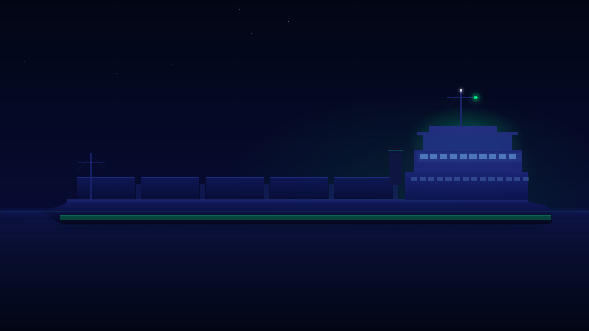

Transporte fluvial
Embarcações de grande comprimento para movimentação regular em rios, canais e áreas abrigadas.

Desde 1964
Frota de Petroleiros do Sul Ltda — décadas de atuação no transporte hidroviário, operações portuárias e navegação no sul do Brasil.
Institucional
Fundada em 1964, a Petrosul atua no transporte hidroviário com embarcações preparadas para operações de carga, apoio logístico e navegação em rotas do sul do Brasil.

Área de atuação
Embarcações de grande comprimento para movimentação regular em rios, canais e áreas abrigadas.
Aproximação a terminais, silos, margens urbanas e infraestrutura de carga ao longo das rotas fluviais.
Frota própria com fichas técnicas organizadas para identificação rápida de especificações e disponibilidade.

Frota
Página separada com barra de navegação entre navios, fotos individuais e fichas técnicas organizadas para consulta rápida.
Abrir página da frotaContato
Equipe preparada para encaminhar demandas de transporte, disponibilidade de frota e informações técnicas.
Petrosul no LinkedIn